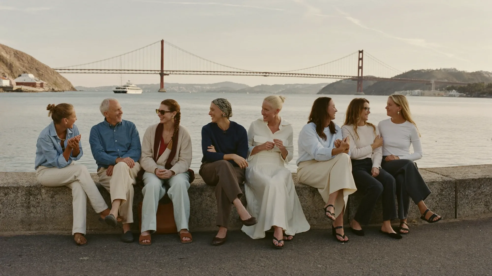
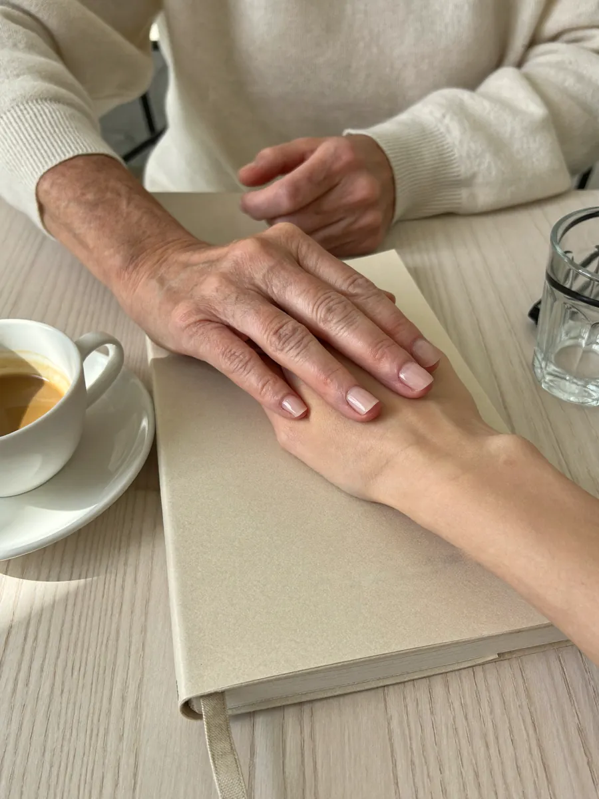
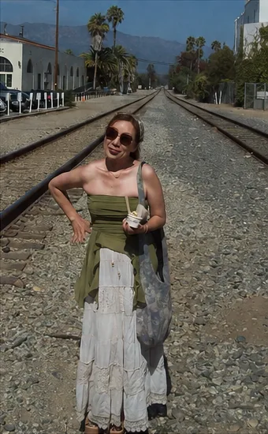
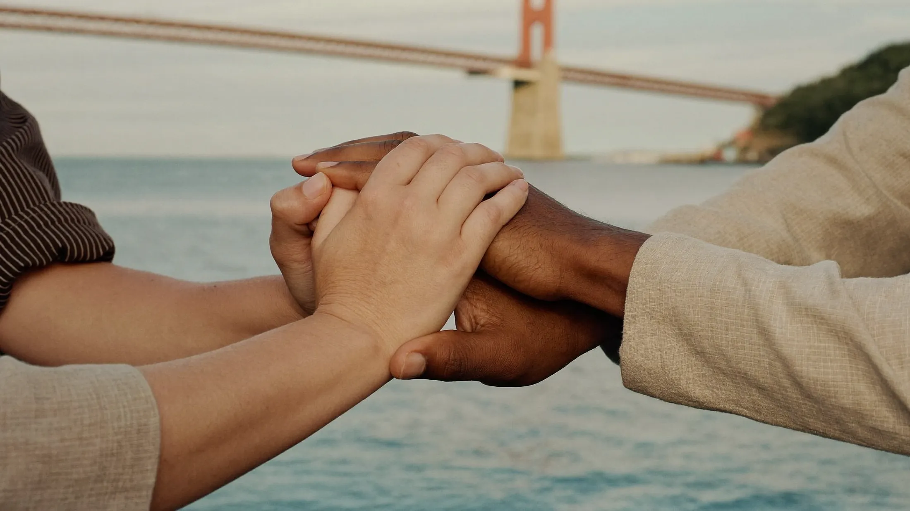
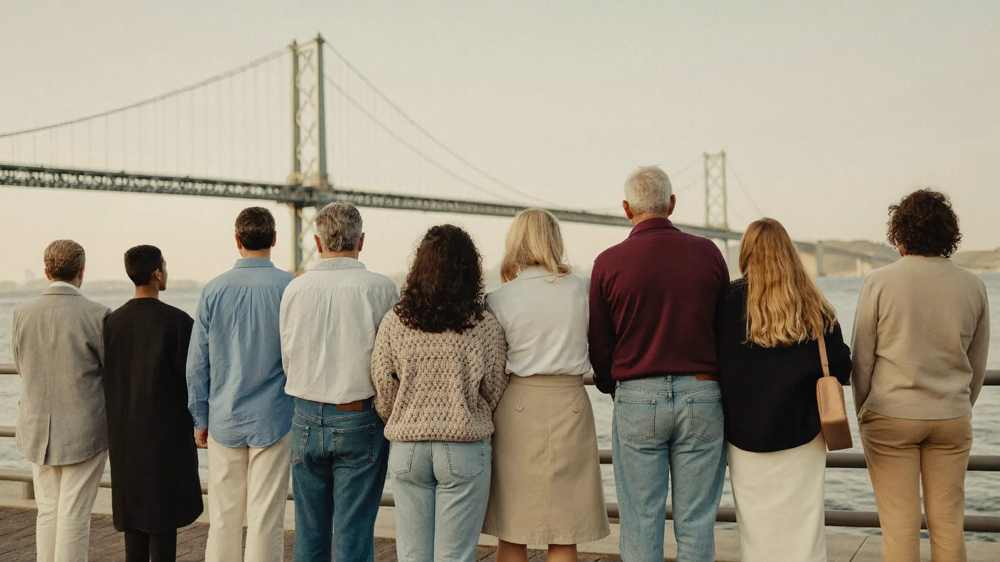
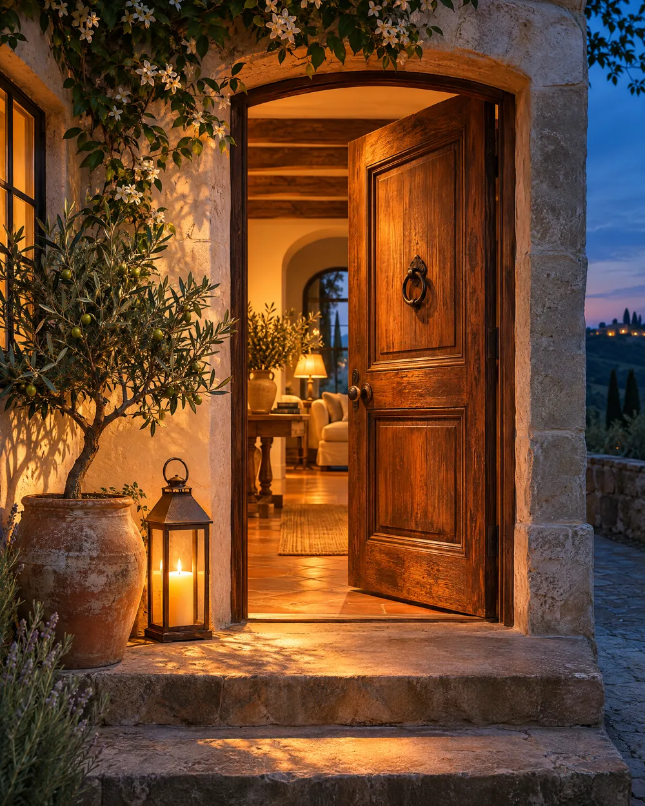

The One Who Needs to Be Heard
You're carrying something heavy — loneliness, heartbreak, a crossroads — and you just want someone to listen.
HBA Founder
Pour a cup of coffee and stay a while. Here, every story is heard — and every story can become a bridge.
Listen. Connect. Bridge.
Listen · Understand · Connect · Bridge
Everyone has a story. Everyone deserves to be heard. Everyone is welcome.
HBA — Human Bridge Ambassador — is a judgment-free community that discovers people, listens to their stories, and connects them: mentors with mentees, people with resources, and one human heart with another.
Our Mission
HBA exists to listen without judgment, understand with empathy, and connect people to real resources and each other — to build bridges of hope for a better tomorrow.
Our Vision
Different lives. Different experiences. Equal human worth. One heart, one journey, one human family.
Listen. Connect. Bridge.
PRO like an amateur.
AMATEUR like a pro.
MAINSTREAM like an outsider.
OUTSIDER like the mainstream.

We go where you need us.
We stay where love is needed.
And our door is always open when you want to come.
Different stories.
Equal human worth.
Together, we bridge lives.
No labels. No judgment. Just human.
You're carrying something heavy — loneliness, heartbreak, a crossroads — and you just want someone to listen.
A new country, a new job, a new business, a new season of life. You need someone who has walked this road before.
Failure, rock bottom, starting again. Your past is not your ending — it's the forge where your diamond is made.
You've lived through it, learned from it, and want to give back. Your real-life experience is exactly what someone needs.
Different lives. Different stories. One human family.
Flip your perspective.
See people. Not labels.
How it works
We listen to your story without judgment.

02We share real-life experiences from our own journey.
We connect you to people, resources, or community that can help.
We walk with you as you cross to your next chapter.
All areas are life coaching based on my own experiences
Everything I share comes from my own life — every success, failure, tear, and lesson. Real experiences. Real coaching. Real connection.
Life changes, failure, comeback, new beginnings, purpose.
Relationships, divorce, loss, healing a broken heart.
Parenting, family conflict, single moms & dads, healing & restoration.
Job search, workplace challenges, career change, leadership.
Starting a business, restaurants, small business, failure, lessons, growth.
Immigrant life in America, adjusting to a new country, culture shock, students.
Finding meaning, holding on to hope, spiritual journeys.
Money, everyday life, budget, financial ups & downs, real choices.
Seniors, loneliness, respect, dignity, connecting generations.
Loneliness, isolation, or simply wanting someone to talk to.
Failure, rock bottom, pain, lessons, and a second chance.
Volunteering, community, helping others, resources & connection.
All areas are shared through real stories, interviews, TikTok, and Instagram — sharing to inspire.
What we stand on
No labels. No judgment. Just human.
Real life before image. Human before title.
Bridges before walls. People before positions.
One story, one person, one bridge at a time.

Founder
Founder | Human Bridge Ambassador
From the golden spoon to the dirt spoon, Elizabeth discovered a diamond within. Today, from the driver's seat, she listens to stories and builds bridges between one human heart and another.
"I don't have to be the answer. I can be the bridge."
Everything I share comes from my own life — every success, failure, tear, and lesson. Real experiences. Real coaching. Real connection.
I am not a perfect person. I am a person who kept going.
A failure at times, a person of pain at times — that is how a diamond was forged.
HBA is my life's work and calling. I will keep listening, learning, and bridging — one person at a time, for as long as I live.
Look at me in you.
Look at you in me.
We are us.
We are one
I am you.
You are me.
When I was sad,
you were smiling.
When you were hurting,
was I truly happy?
We are one
You are
my mirror
I am
your mirror
We learn through each other.
We grow through each other.
We heal through each other.
One heart, one love, one journey
We are connected.
We are one story.
We are one human.
Chains that bind me alone remain tight and unbreakable. But when we work together, they break.
The knots that connect you and me become even stronger when we tie them together. That is how we become one.
The same knot can be a chain that binds, or a lifeline that connects. It all depends on how we choose to tie it — together.
So let's choose to tie it the right way. Together. Always. Let's be WE.

We listen. We connect. We bridge.
Founder's Message
When you and I come together, we become more than I or you. We become a bridge that changes lives.
One heart. One journey. One human family.
We are One.

In your heart, in your story, you will find me.
In my heart, in my journey, you will find you.
Different lives. Different stories. But one heart, one purpose, one human family.
We listen. We connect. We bridge.

I will go where you need me — with my heart.
And when you want to come,
my door is always open.
Founder's Message
I believe that when we see each other truly, without labels or judgments, love becomes the bridge, and we become the change this world has been waiting for.
— Elizabeth Kim
FLIP the way we see people. TAKE OFF the labels. MEET heart to heart.
Our door is always open
Every bridge begins with a conversation. Come as you are — we'll listen first.
Need someone to listen, or looking for a mentor who has been where you are? Tell us a little, and we'll find your bridge.
Find a BridgeTurn your lived experience into someone else's way forward. Join as a mentor, listener, or volunteer.
Become a MentorOrganizations, churches, businesses, and donors — help us build more bridges in our communities.
Partner With UsStories, events, and new bridges — straight to your inbox.
Contact
Everything you share stays private and is shared only with your permission.